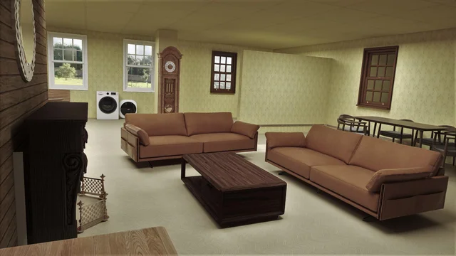

The backrooms felt right when the were just seen as an empty, but infinite space of meaningless rooms, with no escape- instead of monsters roaming and chasing you.

Now imagine the backrooms, but with furtnite, living spaces. Families would live side by side in every corner of the backrooms, in a sort of eerie utopia...